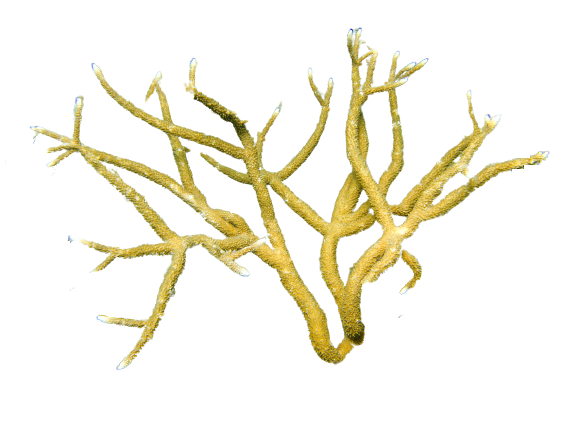

×
Acropora muricata (Dana, 1846)
Staghorn Coral
Scleractinia
Acroporidae
Near Threatened
Branch surfaces are even and fairly regular. Radial corallites are tubular and may occur in two sizes. Tentacles are not seen during the daytime. Colour is usually cream, brown or blue, usually with pale branch ends.
Marine. Acropora formosa is mainly found in shallow, lagoonal areas without strong wave action. Mature gametes are shed into the coelenteron and spawned through the mouth. The zygote develops into a planktonic planula larva. Metamorphosis begins with early morphogenesis of tentacles, septa and pharynx before larval settlement on the aboral end.
Not Available
Federal Republic of Somalia, India, Indian Ocean, Madagascar, Marshall Islands, Mozambique, North Pacific Ocean, Red Sea, Republic of Mauritius, Seychelles, South Pacific Ocean, Tanzania, United States